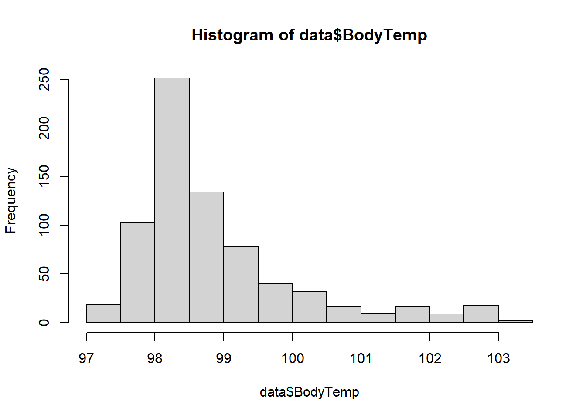

For each (important) variable, produce and print some numerical output (e.g. a table or some summary statistics numbers). - Myalgia - Cough Intensity - Weakness
Chills
Fatigue
Headache
Vision
For each (important) continuous variable, create a histogram or density plot. - Body Temperature
Create scatterplots or boxplots or similar plots for the variable you decided is your main outcome of interest and the most important (or all depending on number of variables) independent variables/predictors.
Summary Statistics for Categorical Data
table(data$Myalgia)
None Mild Moderate Severe
79 213 325 113
table(data$CoughIntensity)
None Mild Moderate Severe
47 154 357 172
table(data$Weakness)
None Mild Moderate Severe
49 223 338 120
par(mfrow=c(1,3)) # show the following plots side by sidebarplot(table(data$Myalgia), ylab ='Severity of Flu Symptoms', xlab ='Myalgia', ylim =c(0,350))barplot(table(data$CoughIntensity), xlab ='Cough Intensity', ylim =c(0,350))barplot(table(data$Weakness), xlab ='Weakness', ylim =c(0,350))
Summary Statistics for Binary Data
table(data$ChillsSweats)
No Yes
130 600
table(data$Fatigue)
No Yes
64 666
table(data$Headache)
No Yes
115 615
table(data$Vision)
< table of extent 0 >
table(data$Nausea)
No Yes
475 255
par(mfrow=c(1,5)) # show the following plots side by sidebarplot(table(data$ChillsSweats), ylab ='Presence of Flu Symptoms', xlab ='Chills or Sweats', ylim =c(0,800))barplot(table(data$Fatigue), xlab ='Fatigue', ylim =c(0,800))barplot(table(data$Headache), xlab ='Headache', ylim =c(0,800))barplot(table(data$Nausea), xlab ='Nausea', ylim =c(0,800))
Summary Statistics for Continuous Data
summary(data$BodyTemp)
Min. 1st Qu. Median Mean 3rd Qu. Max.
97.20 98.20 98.50 98.94 99.30 103.10
hist(data$BodyTemp) #histogram

d <-density(data$BodyTemp)plot(d, main="Flu Body Temperature") #Density plot
Visualizing Data interations
ggplot(data = data) +geom_boxplot(aes(x= Myalgia, y = BodyTemp))
ggplot(data = data) +geom_boxplot(aes(x= CoughIntensity, y = BodyTemp))
ggplot(data = data) +geom_boxplot(aes(x= Weakness, y = BodyTemp))